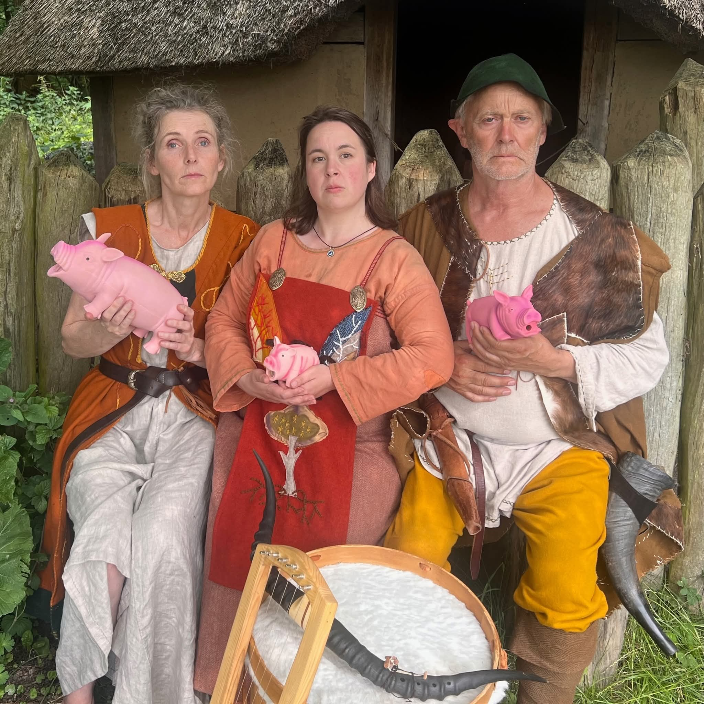

Nordisk Klang • Svensk Folkemusik
Emelie Blomgren
Folkemusiker • Skjald • Visesangerinde
UdforskOm MLI
Svensk folkemusiker med rødder i den nordiske tradition — fra vikingetidens skjaldedigtning til nutidens store scener.

— MLI
MLI er kunstnernavnet for Emelie Blomgren — en svensk folkemusiker og visesangerinde med rødder dybt i den nordiske musiktradition. Hun bringer historiens klange ind i nutiden gennem kraftfuld sang, guitar og den gamle lyre.
Emelie er uddannet skjald og specialiseret i svensk folkemusik, middelaldersballader og den nordiske visetradition. Hun synger på både svensk og dansk, og hendes repertoire spænder fra glemte folkeviser til egne fortolkninger af den fælles nordiske musikalske arv.
Musikalske Projekter
MLI's musikalske rejse spænder over flere ensembler — hver med sit eget udtryk og sin egen historie.
Sanger & Skjald
Vikingeband stiftet i 2022 i Jernalderlandsbyen Odins Odense. Sammen med Kai Stensgaard (Skramle) og Tine K. Skau (Blæsekonen) skaber de original vikingemusik med titler som Ymer, Mandfod og Kvindfod og Ask & Embla. Rytmer, myter og melodier fra verdens skabelse.
Sanger
1800-tals skillingsvise-ensemble med Tine Katrine Skau og Kai Stensgaard. Historiske viser og fortællinger fra en svunden tid — spillet på autentisk vis og formidlet med varme og nærvær på festivaler og historiske events.
Sanger
Bellman-inspireret ensemble der fortolker Carl Michael Bellmans viser og den svenske 1700-tals tradition. Musikalsk finurlighed og poetisk dybde i skandinavisk visetradition.
Folkemusiker & Visesangerinde
MLI's solorepertoire spænder fra svenske folkeviser som Fattig bonddräng og Bergakungen til danske sange som Stille hjerte, sol går ned (Jeppe Aakjær). Hendes musik er en rejse gennem den nordiske folkesjæl.
Stueleder & Formidler
På Skjaldefestivalen står MLI for Visestuen — en traditionel folkevise-workshop hvor alle kan deltage. Hun lærer deltagerne skønne folkeviser strofe for strofe, bygget op efter gammel tradition med forsanger og fællessang.
Kontakt
Interesseret i booking, samarbejde eller bare en snak?
Send en mail — Emelie svarer gerne.
Følg MLI
Find musikken
Følg Emelies musikalske rejse på tværs af platforme.